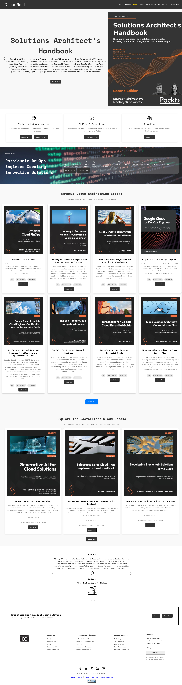
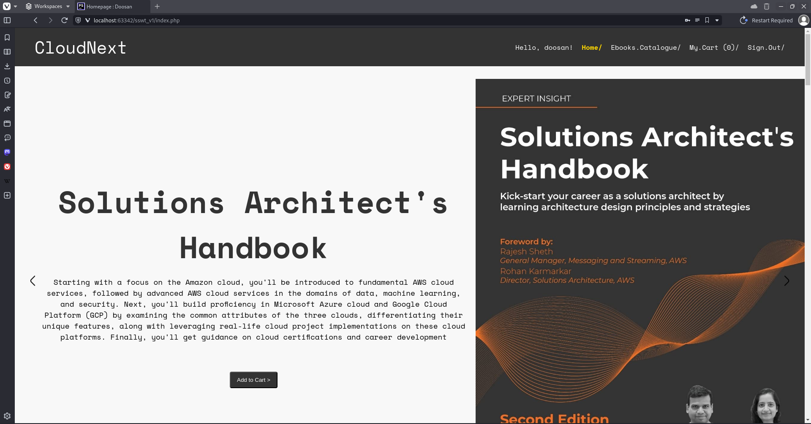

Homepage Technical Documentation
1. Overview
This documentation covers the structure and functionality of the homepage for CloudNext, a platform providing cloud engineering eBooks. The homepage fetches book data from the database and categorizes them into Best Sellers, Featured Books, and Normal Books. The user interaction section includes login, cart viewing, and search functionalities.
2. Homepage Sections
- Elements:
- Logo: Positioned in the top left corner, clickable, leading back to the homepage.
- Navigation Links:
- Home: Redirects to the homepage.
- Books: Leads to the complete book catalog.
- Cart: Allows users to view their cart contents.
- Login/Logout: Allows users to sign in or sign out. If logged out, the option will show as "Login," and the user will be greeted as Guest. Once logged in, the user's username will be displayed with a logout option.
- Search Bar: Users can search for books by title, author, or other related keywords.
2.2. Featured Books (Slider)
- Functionality:
- This section displays the Featured Books in a dynamic slider at the top of the homepage.
- The books are fetched from the database, and only those marked as "featured" will appear in this section.
- Users can click on the books in the slider to view detailed information or add them to their cart.
2.3. Middle Section (Latest Normal Books)
- Description:
- This section shows the Normal Books, which are neither marked as Best Sellers nor Featured.
- The latest books are fetched from the database and displayed here.
- Each book has a thumbnail, title, and an "Add to Cart" or "View More" button.
2.4. Best Sellers Section
- Functionality:
- The Best Sellers section displays the top three best-selling books.
- The books are fetched from the database based on their sales rank, and only the latest three best sellers are shown.
- Each book has a thumbnail, title, and a "View More" or "Add to Cart" button.
3. Book Categories
There are three types of books displayed on the homepage, all fetched from the database:
- Featured Books: Displayed in the slider at the top of the page.
- Normal Books: Displayed in the middle section of the homepage, these are the latest books that are neither featured nor best sellers.
- Best Sellers: Shown in a separate section below the normal books, with only the latest three fetched from the database.
4. User Interactions
4.1. Login & Greeting
- Guest Users: If the user is not signed in, they will be greeted as "Guest" in the header.
- Logged-in Users: Once the user signs in, they will be greeted with their username displayed in the header, replacing the "Guest" greeting.
4.2. Cart System
- Users can view the books added to their cart by clicking the Cart button in the navigation bar.
- The cart is persistent across sessions for logged-in users and stored temporarily for guests.
4.3. Book Search
- The search bar in the navigation allows users to search for books by title, author, or other relevant metadata.
- Results are fetched dynamically from the database.
5. Database Interaction
- All books (featured, normal, and best sellers) are fetched from the database.
- Featured Books are identified through a specific flag in the database and displayed in the slider.
- The Best Sellers are determined based on the sales data stored in the database, and only the latest three are shown on the homepage.
- Normal Books are those that do not fall into either of the other two categories and are displayed in the middle section of the page.

